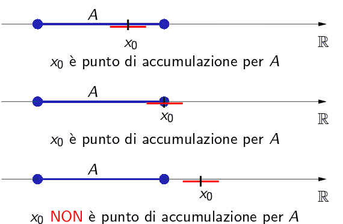

Topology
Definition 1.1.1. A set A ⊆ ℝ is bounded above if there exists a number M ∈ ℝ such that a ≤ M for all a ∈ A. The number M is called an upper bound for A. Similarly, the set A is bounded below if there exists a lower bound l ∈ ℝ satisfying l ≤ a for every a ∈ A. □
Definition 1.1.2. A real number s is the least upper bound for a set A ⊆ ℝ if it meets the following two criteria:
s is an upper bound for A;
if b is any upper bound for A, then s ≤ b.
The least upper bound is also frequently called the supremum of the set A and is denotes by s = sup A. The greatest lower bound or infimum for A is defined in a similar way and is denoted by inf A. □
Definition 1.1.4. A real number M is a maximum of the set A if M is an element of A and M ≥ a for all a ∈ A is denoted by M = max A. Similarly, a number m is a minimum of A if m ∈ A and m ≤ a for every a ∈ A, and is denoted by m = min A. □
Example 1.1.3. Let
A = {1/n : n ∈ ℕ} = {1, 1/2, 1/3, ..}
The set A is bounded above and below. Successful candidates for an upper bound include 3, 2, and 5/2. For the least upper bound, we claim sup A = 1, which is also the maximum of A. To argue this rigorously using Definition 1.1.2, we need to verify that properties (i) and (ii) hold. For (i), we just observe that 1 ≥ 1/n for all choices of n ∈ ℕ. To verify (ii), we begin by assuming we are in possession of some other upper bound b. Because 1 ∈ A and b is an upper bound for A, we must have 1 ≤ b. This is precisely what property (ii) asks us to show. ■
Intervals
We call a subset A of real line an interval if, whenever we have distinct point a,b ∈ A, then all points which are greater than a and less than b also lie in A.
Definition 1.1.4. Let a and b two real numbers such that a ≤ b. We call closed interval the set
[a,b] = {x ∈ ℝ | a ≤ x ≤ b}
If a < b, we call open interval of extremes a and b, the set
(a,b) = {x ∈ ℝ | a < x < b}
An equivalent notation for this set is ]a,b[. □
It's possible to exclude from the interval one extreme, obtaining the semi-opened interval to the right of extremes a and b
[a,b) = {x ∈ ℝ | a ≤ x < b}
or semi-opened interval to the left
(a,b] = {x ∈ ℝ | a < x ≤ b}
The intervals presented above are all example of bounded intervals; There are also unbounded (or infinite) intervals;
Definition 1.1.5. We define the infinite intervals
(a, ∞) = {x ∈ ℝ : x > a},
[a, ∞) = {x ∈ ℝ : x ≥ a},
(−∞, b) = {x ∈ ℝ : x < b},
(−∞, b] = {x ∈ ℝ : x ≤ b},
(−∞, ∞) = ℝ.
In particular if a = b, we have a degenerate interval; A singleton {a} is a degenerale interval. □
The symbol −∞ and +∞ do not indicate real numbers; they allow to extended the ordering of real numbers with the convention that −∞ < x and x < +∞ for each x ∈ ℝ. In some cases we set
(−∞ , +∞) = ℝ
Completeness
Definition 1.1.6. A system S of numbers is said to be complete if every non-empty subset of S, which is bounded above has a member of S for its supremum. □
Example 1.1.7 (Completeness of ℤ). The set ℤ of all integers is complete. Let A be any non-empty set of ℤ which is bounded above. Then A must possess a greatest integer. For, if A does not possess a greatest integer, then however great an integer n we may take, there exists an integer m ∈ A such that m > n and so A cannot be bounded above. But this is a contradiction. Hence A must contain a greatest integer, say a.
Example 1.1.8. Consider the set A = {q ∈ ℚ: 0 ≤ q ≤ √2}. The set A is certainly bounded above. Taking s = 2 works, as does s = 5/2. But notice what happens as we go in search of the least upper bound which is a rational number. It may be useful here to know that the decimal expansion for √2 begins 1.4142 ....) We might try r = 142/100, which is indeed an upper bound, but then we discover that r = 1415/1000 is an upper bound that is smaller still. In the real numbers, there is, but in the rational numbers, there is not whatever rational upper bound is discovered, it is always possible to find one smaller. ■
The idea that the real numbers form a continuum—a property which immediately distinguishes them from the rational numbers which present gaps between their elements. This property is embodied in an axiom which we call the completeness axiom for the real number system.
1.1.9. Axiom of Completeness. Every nonempty subset A of ℝ is complete. In other words, sup A exists and is a real number. □
There exists an equivalent way of characterizing least upper bounds. Recall that Definition 1.1.3 of the supremum has two parts. Part (i) says that sup A must be an upper bound, and part (ii) states that it must be the smallest one. The following lemma offers an alternative way to restate part (ii).
Lemma 1.1.10. Assume s ∈ ℝ is an upper bound for a set A ⊆ ℝ. Then, s = sup A if and only if, for every choice of ε > 0, there exists an element a ∈ A satisfying s − ε < a.
Proof. By definition if s is an upper bound, s is the least upper bound if and only if any number smaller than s is not an upper bound. To be more precise we will examine both directions. (⇒) For the forward direction, we assume s = sup A and consider s − ε, where ε > 0 has been arbitrarily chosen. Because s − ε < s, part (ii) of Definition 1.1.2 implies that s − ε is not an upper bound for A. If this is the case, then there must be some element a ∈ A for which s − ε < a (because otherwise s − ε would be an upper bound). This proves the lemma in one direction.
(⇐) Conversely, assume s is an upper bound with the property that no matter how ε > 0 is chosen, s − ε is no longer an upper bound for A. Notice that what this implies is that if b is any number less than s, then b is not an upper bound. (Just let ε = s − b.) To prove that s = sup A, we must verify part (ii) of Definition 1.1.2. (Read it again.) Because we have just argued that any number smaller than s cannot be an upper bound, it follows that if b is some other upper bound for A, then b ≥ s. ■
We introduce now the definitions for supremum and infimum values of a set. These are also know as the set's least upper bound and greatest lowew bound, of the set respectively.
Some sets have a supremum and others do not. For example the set A = [0,1), has a supremum which is 1, but it is not in A and a infimum 0 which is in A so it is also a minimum. The set A = [0,+∞) does not have any upper bound: the supremum of the set is not defined.
Theorem 1.1.11 (Uniqueness) A set A can have at most one least upper bound.
Proof - Let M0 and M1 be least upper bounds of A. We must prove that M0 = M1. Since M1 is upper bound, and M0 a least upper bound, we have M0 ≤ M1 and M1 ≤ M0. Hence M0 = M1. □
Even when the set is unbounded we cal talk about upper and lower bounds by setting:
sup A = +∞
inf A = −∞
Theorem 1.1.12 The set of natural numbers ℕ is not upper bounded.
Proof. If ℕ was upper bounded, then there would exist M = sup ℕ. This would imply that:
M − 1 < n ≤ M, ∀n ∈ ℕ
from which follows tha tn + 1 > M contradicting the hyphotesis M = sup ℕ.
Theorem 1.1.13 For any real-values sets A and B with A ⊆ B, sup a ≤ sup B and inf A ≥ inf B.
Proof We prove the first proposition; the secndo is proved similarly. Since sup B is an upper bound for B and since A ⊆ B, sup B must also be an upper bound for A. As for any upper bound for A, sup B either equals sup A, or the second part of definition 1.5 implies it is greater than sup A. In any case, sup a ≤ sup B. □
Neighborhoods
Definition (Accumulation Point, Isolated Point). Let A &subseeqt; ℝ: We call x0 ∈ ℝ an accumulation point (or limit point) of A if for every ε > 0, Bε(x0) contains an element a ∈ A \{x0}. A number x0 ∈ A is called an isolated point of A if it is not an accumulation point of A; i.e., if for some ε = ε(x0), we have Bε(x0) ∩ A = {x0}. □
An accumulation point is also called a cluster point, a condensation point or a limit point. An accumulation point of a set may or may not be a member of the set.
Remark. If x0 is an accumultaion point of A ⊂ ℝ, then for each ε > 0 the intersection Bε(x0) ∩ A is infinite. That is the definition implies that every neighborhood of x0 contains an inifnite number of points of A. For if on the contrary it only contained a finite number of points of A, say a1, an, we could find a smaller neighborhood of x0 that does not contain a1, an as indicated as follows.
________(____a2____a3__(x0)___a1_____)___
Intuitively this means that by zooming in an infinite number of times at x0 we continue to see points of A (different from x0) at all magnifications no matter how deep you zoom in.
If we reformulate the definition to include this; we can drop the clause excluding x0: x0 is an accumulation point of A if every neighborhood of x0 contains infinitely many points of A.
To clarify the definition of accumulation point, examine the following cases:
The set {1,1/2,1/4,...} has 0 as accumulation point; in fact 0 is the only accumulation point of this set. The set of integers ha no accumulation point, for no number has infinite number of integers nearby.